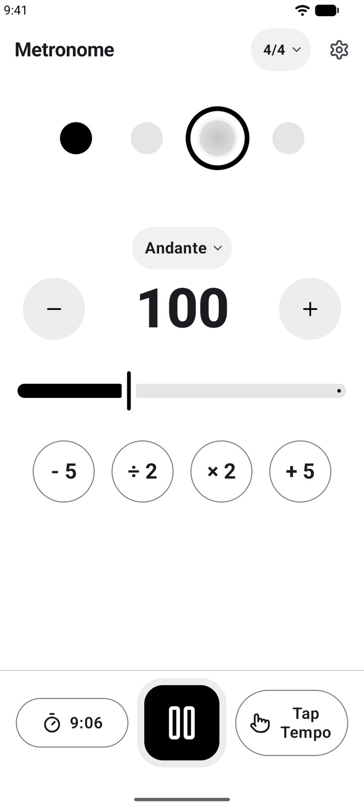
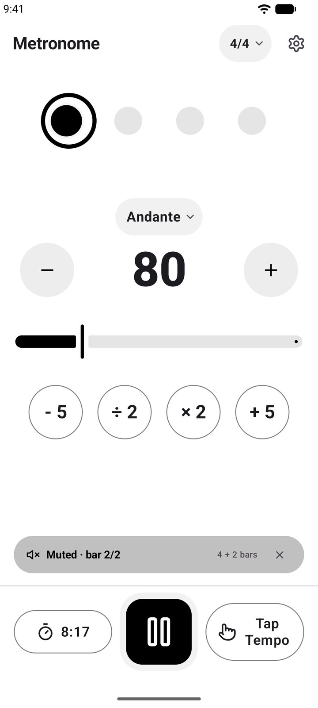
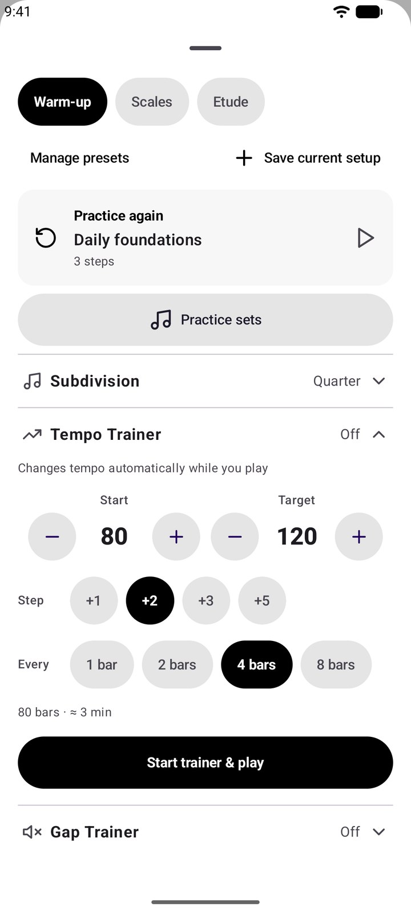
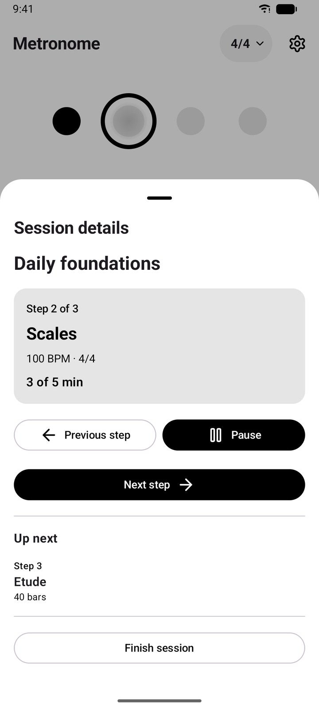
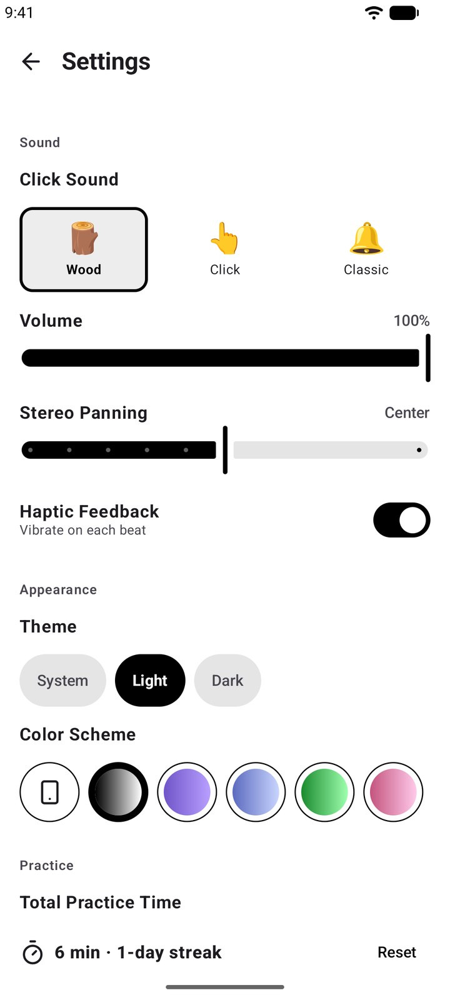

A precise metronome built for better practice
Precise timing. Better practice. Free, ad-free, and no account required.
Try it right now — the whole app runs in your browser, no download.

Inside the app
Practice tools, not just a click
The browser version above covers the basics. The app adds the practice structure: saved setups, ordered sessions, and trainers that make the click harder on purpose.

Precise timingSet the BPM, tap a tempo, shape every beat.

Gap TrainerKeep time through the silent bars.

Tempo TrainerClimb from 80 to 120, two BPM at a time.

Practice SetsFollow your plan, one step to the next.

Made yoursSounds, haptics, themes and colour schemes.
Everything included
Free, and genuinely free
No advertisements, no account, no paid tier holding a feature back.
- Precise BPM from 40 to 220
- Tap tempo and quick BPM steps
- Common and odd time signatures
- Per-beat accents and mute
- Eighths, triplets and sixteenth subdivisions
- Practice Presets for whole setups
- Practice Sets that run presets in order
- Tempo Trainer and Gap Trainer
- Countdown timer, stopwatch and count-in
- Background playback and Live Activities
- Practice time, totals and streaks
- Light and dark themes, multiple colour schemes
Questions
What is a gap trainer?
The gap trainer plays a set number of bars, then goes silent for a set number of bars while the beat keeps counting. You keep time yourself through the silence and find out whether you are still with the click when it returns. It is the most direct way to train your internal pulse.
How does gradual tempo practice work?
Set a starting tempo, a target tempo, a step size and how many complete bars to hold before each step. The Tempo Trainer then moves the BPM for you while you play, so you can take a difficult passage from slow to performance tempo without stopping to change the number.
What is the difference between a preset and a practice set?
A Practice Preset is one saved setup — tempo, time signature, subdivision, per-beat accents and mutes, and count-in. A Practice Set is an ordered sequence of those presets, where any step can carry a time or bar goal. Presets are what you play; sets are how you work through a session.
Does it work offline?
Yes. The core practice features work without a network connection, and there is no account to create. Settings and practice activity are stored on your device.
Does it keep playing in the background?
Yes. Playback continues with the screen off or another app in front. On supported iPhones the current tempo and practice timer also appear on the Lock Screen and in the Dynamic Island.
Is the web version the same as the app?
It is the same app: the browser version is built from the same Kotlin and Compose code, compiled to WebAssembly, and runs the same beat scheduler. The installed app still has the advantage on a phone, because it keeps playing with the screen off, supports haptics and Live Activities, and remembers your presets and practice sets between sessions.